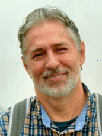

Dra. Claudia Bauzer Medeiros

Claudia Bauzer Medeiros es profesora a tiempo completo de Bases de Datos en el Instituto de Computación de la Universidad de Campinas (Unicamp), Brasil y miembro de la Academia Brasileña de Ciencias. Ella ha recibido reconocimientos en Brasil y a nivel internacional en investigación, enseñanza y también por su trabajo en el fomento de la participación de las mujeres en actividades relacionadas con las tecnologías de la información.
Su investigación se centra en el diseño y desarrollo de bases de datos científicas. Su principal interés radica en afrontar los retos que plantean las grandes aplicaciones del mundo real, que requieren el manejo de fuentes de datos distribuidas y muy heterogéneas.
Es Comendadora de la Orden Brasileña del Mérito Científico, Dra. Honoris Causa de la Universidad Antenor Orrego, Perú, y de la Universidad Paris-Dauphine, Francia. Es miembro en general del Consejo de la ACM, miembro del Consejo de la Research Data Alliance (RDA) y del World Data System (WDS).
Tema de la conferencia: Compartiendo datos de Covid-19 – Open Science y el Repositorio FAPESP COVID-19 Data
Dr Francisco Tirado

Francisco Tirado es Catedrático de Arquitectura y Tecnología de Computadores en la Universidad Complutense de Madrid.
Ha trabajado en diferentes campos dentro de la Arquitectura de Computadores, Procesamiento Paralelo y Automatización
del Diseño. Sus áreas de investigación actuales son algoritmos y arquitecturas paralelas, diseño de procesadores.
Ha participado en la organización de más de 100 conferencias internacionales como presidente general, miembro del
comité directivo, presidente del programa, miembro del comité del programa, orador invitado y presidente de la
sesión. Ha sido director del CSC (Centro de Supercomputación) y del Parque Científico de Madrid. El Prof. Tirado
es Catedrático de la Sociedad Española de Informática Científica (SCIE), Doctor “honoris causa” por la
Universidad Nacional de Asunción, Universidad Nacional de San Agustín, Universidad Nacional de La Plata
y Universidad de Almería. El Prof. Tirado es miembro senior de IEEE, miembro de la Sección de Computación
de la Academia Europea y ha recibido el Premio Nacional de Informática de España 2013.
Dr. Rainmundo Macedo

Raimundo Macêdo es profesor titular en el Departamento de Ciencias de la Computación y jefe del Laboratorio de
Sistemas Distribuidos (LaSiD) de la Universidad Federal de Bahía (UFBA) en Brasil. Tiene un Ph.D. en Ciencias
de la Computación de la Universidad de Newcastle upon Tyne (Inglaterra).
Es el actual presidente de la Sociedad Brasileña de Computación (SBC)
El Prof. Macêdo ha participado y coordinado varios proyectos de investigación con diferentes instituciones de
investigación brasileñas e internacionales, cubriendo muchos aspectos de los sistemas distribuidos confiables
(algoritmos, arquitecturas e implementaciones), y formó parte del comité de programa de numerosas conferencias
sobre el área de sistemas confiables, incluyendo IEEE / IFIP DSN, IEEE SRDS, LADC (Simposio Latinoamericano
de Computación Dependiente), EDCC (Conferencia Europea de Computación Dependiente), entre otros. Actualmente
es miembro del comité directivo de SRDS (Simposio Internacional sobre Sistemas Distribuidos Confiables).
Sus intereses de investigación incluyen sistemas distribuidos confiables autogestionables
Dr. Miguel Paredes

Miguel Paredes Quiñones es miembro del personal de investigación del grupo de optimización y simulación de
recursos naturales de IBM Research, ubicado en São Paulo, Brasil. Obtuvo su doctorado en ingeniería eléctrica
en la Universidad de Campinas y su maestría en Ingeniería Eléctrica en la Universidad Estadual de São Paulo.
Actualmente investiga técnicas de optimización para simulación de sistemas físicos mediante IA.
Es embajador cuántico en IBM. Sus principales intereses son: Programación de enteros mixtos no lineales,
Optimización convexa,Técnicas de relajación (optimización), Algoritmos de optimización cuántica.
Dr. Roberth Minga Vallejo

Roberth Minga Vallejo es Cloud Marketing Lead en Microsoft Latam Región Sur. Encargado de la estrategia de
marketing para soluciones en la nube en organizaciones de Ecuador, Perú, Bolivia, Paraguay y Uruguay.
Cuenta más de 20 años de experiencia en organizaciones de tecnología y comercialización de soluciones
de software. Ha participado en proyectos de desarrollo bancario, así como en la definición de las estrategias
de marketing y comercialización de soluciones como Azure de Microsoft y ha montado empresas que usan el
modelo de plataforma. Su formación es Ingeniería en Sistemas, cuenta con una Maestría en Administración
de empresas y una certificación en Transformación Digital del MIT.